A Personal Project | Tools: Sketch, Proto.io, html, css, javascript, jQuery
By doing user research, wireframe and prototype, I developed an app called journey, which aimed to create a seamless experience for travelers to record their trips in a personal timeline, and share with other travelers on a social platform.
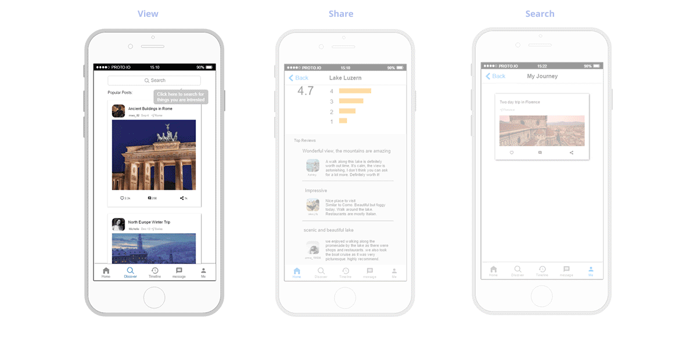
User Research
Before diving into design, I conducted user research to find out the questions I want to focus on. The objective was to gain insights of the traveling habits and figure out design opportunities.
- Online Survey
I created an online questionnaire, asking participants the methods they use to schedule, record and share traveling experience.
- Individual Interview
I conducted 3 semi-structured interviews with participants. By open-ended questions, participants were encouraged to share their views.
Brainstorming by asking more questions.
During travelling, on one hand, we want to immerse ourselves in the environment and engage with the people we meet; on the other hand, we want to capture those moments and share them with others later. Therefore I wanted to focus on exploring how I could create a seamless experience for users to record the journey and share it with other travelers.
For the recording part, I intended to make it feel like a personal diary for each traveler. For the sharing platform, I wanted to make it an active community where people could easily find the travelers who share similar interests and learn about their stories.
About recording:
- How to make the user interface easy for inputs?
- How to make users feel personal for the recording part?
- What are the necessary elements and how to provide customized options for these elements?
About sharing:
- How to design this app so that it can be differentiated from other social apps?
- How to connect the recording to the sharing part seamlessly?
- How to design diverse ways to introduce new posts to users?
Mapping
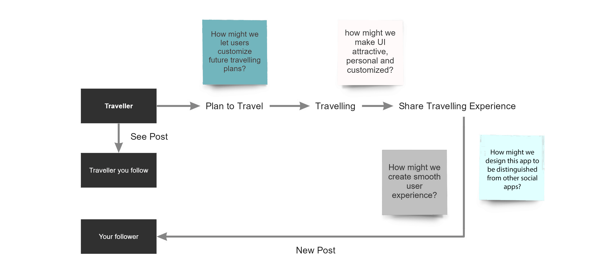
Studying existing apps.
I conducted research on existing traveling and social apps. Some popular traveling apps focus on locations (restaurants/hotels/sightseeing). People can give ratings, leave comments and use the ranking to help them decide where to visit. While on one hand, as data accumulates, the average rating becomes more and more reliable; on the other hand, it becomes more generalized and less personal: “top 3 things to do in Florence”, “top 10 restaurants you can’t miss”...
I wanted to apply the user-center concept of social apps to create a traveling specific sharing platform. Instead of focusing on rating and ranking, I focused my design on users and treated each of them as a unique traveler.
Persona
I began exploring the ways in which particular groups of people could use Journey. I envisioned three types of travelers as potential users and created a persona within each context.
- College students who like traveling around the world
- Local people who would love to explore cities in depth
- Hiking or camping lovers who enjoy wild landscape
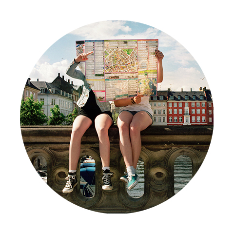
Ashley - College Student
20 years old
Ashley is planning for study abroad in Italy next semester. She wants to travel across Europe and experience different cultures.
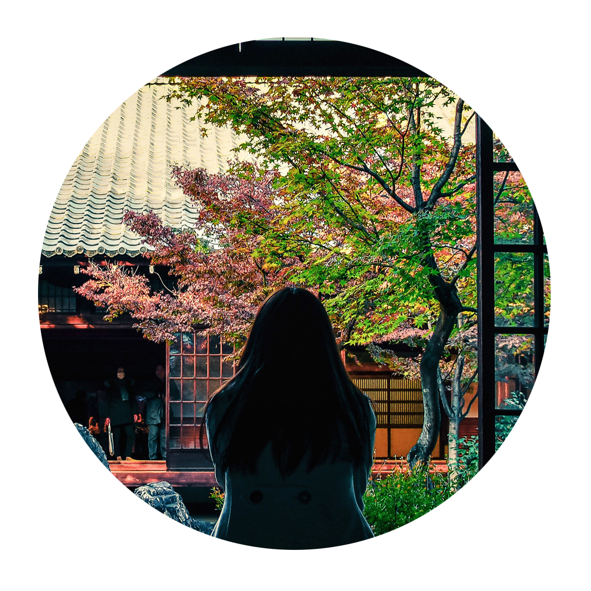
Aiko - designer
35 years old
Aiko is a Japanese designer who loves visiting traditional Japanese architecture and seeing ancient artworks. She wants to share her experience with others who are also interested in Japanese culture.
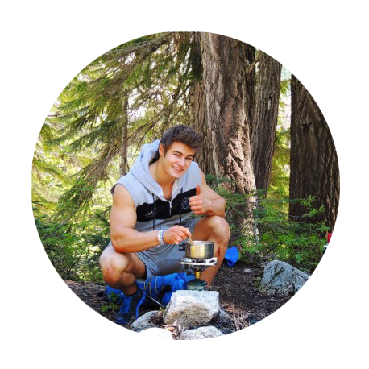
Bryan - Camp Lover
28 years old
Bryan has experience in camping for 5 years and continues to explore and enjoy camping. He wants to find a camping buddy to travel with him.
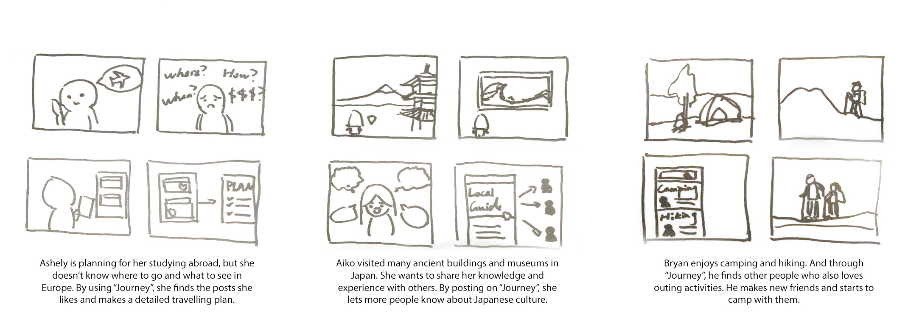
Journey is an user-centered traveling app.
Instead of focusing on generalized rankings, this app focuses on making it personal by helping you to record and visualize your own trips. Moreover, the app is an experience sharing platform that encourages people to share their unique perspective for traveling.
Architecture
After getting the permission to access locations and photos on mobile devices, the app automatically creates a timeline for the journey. It acts as a personal diary to record locations, photos and thoughts, which can only be viewed by the user. If the user wants to share it with others, he/she can choose to create a post on the timeline. The post uses the format of the blog by introducing more text and photos. The sharing platform encourages people to find other travelers who share similar interests with them.
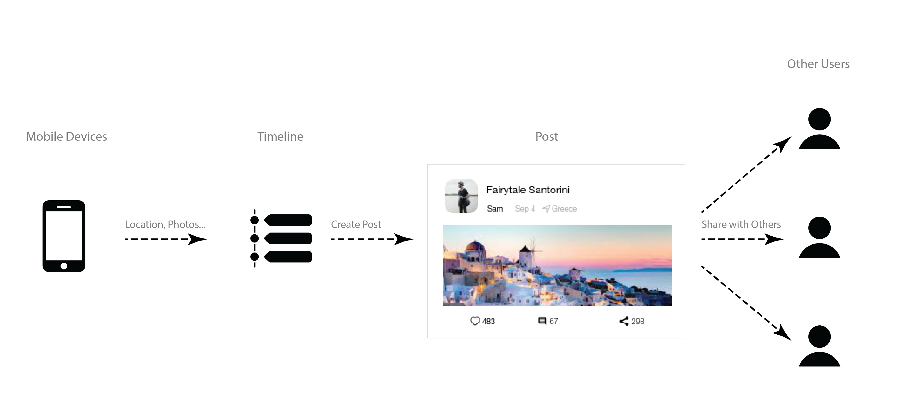
UI Design
I began to develop and build several prototypes. I tested multiple iterations of my ideas with users before finalizing the UI design. It has different tabs for users to record personal timeline, to share their posts, to find and follow other travelers, and to easily communicate in messages.
Proto.io Prototype
Front End Prototype
Timeline
An important feature of the app is that by automatically creating a timeline, it acts as a personal notebook for travelers to keep track of the places they visited and the photos they took. From there, you can easily add notes and post your story.
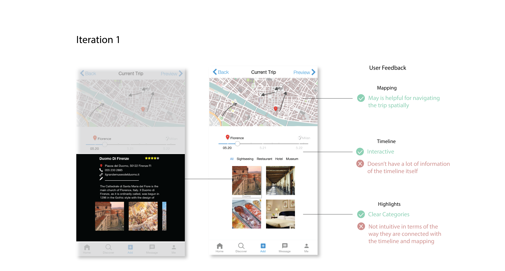
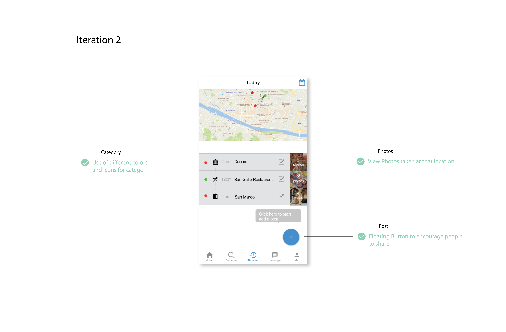
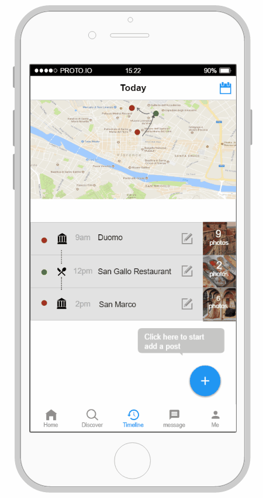
Discover
In the discover section, you can easily search and find the traveler, location, hashtag, and event you are interested in. It helps users to explore and connect with other users with similar interests.
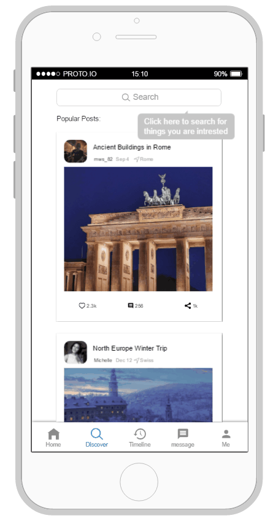
Posts
By following travelers you like, you can see the stories they share and the details of their trips. The interface is designed as a general to detail layout: from overall introduction with photo highlights to detailed daily itinerary and recommendations.
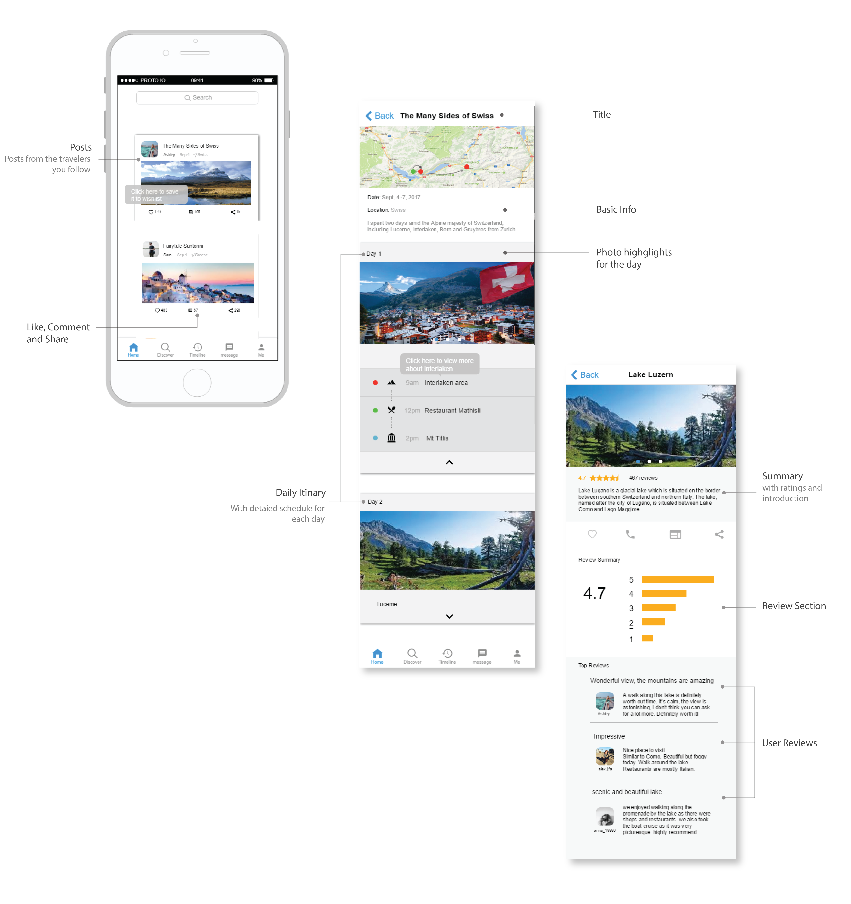
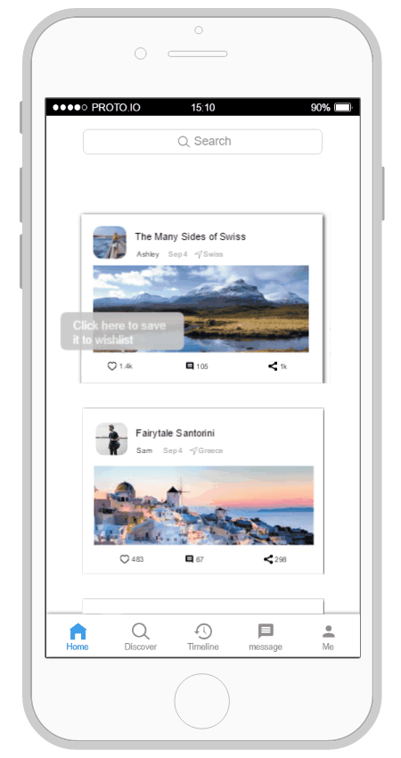
Traveling is a process of creating the memory.
Through interviewing travelers, brainstorming and designing the app, I realize people always have precious memories during their journey, either with their families, friends, or someone they just met. The app acts as a diary, as an album and as a storybook to store those beautiful moments. It also provides a platform for people to share them with others.
More to explore.
Traveling is about enjoying the process. For me, designing this app is also a great process for me. I learned how to develop a concept from the beginning, how to think in a user's perspective and how to use design to reach the goal. Both traveling and learning never ends, as:
"The journey not the arrival matters."